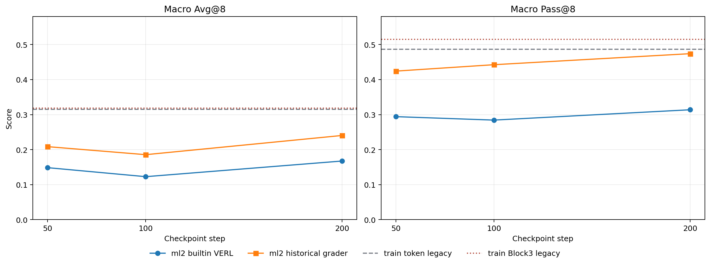
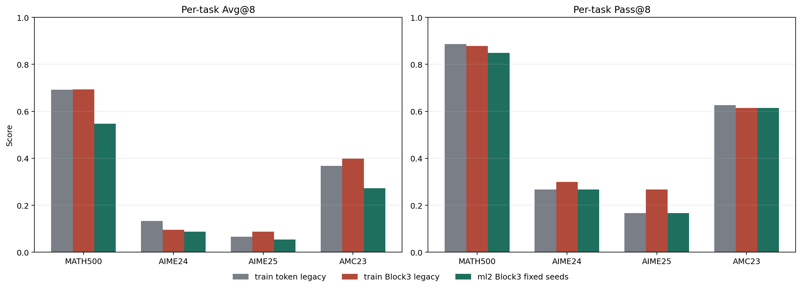
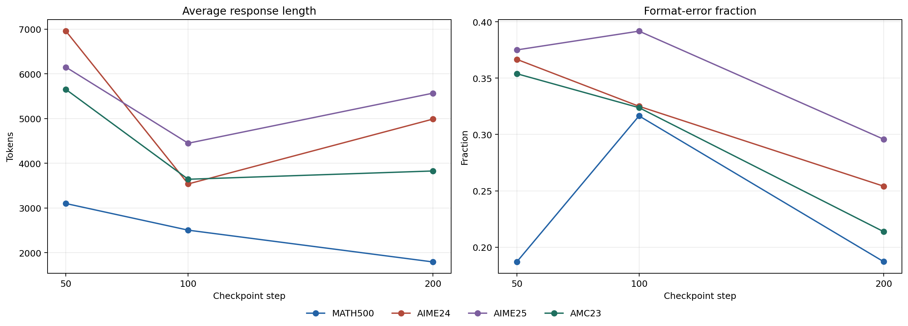
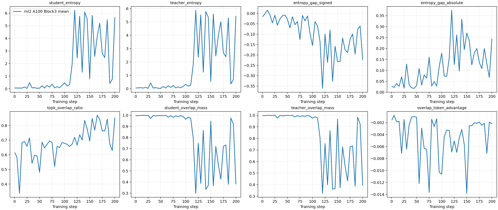
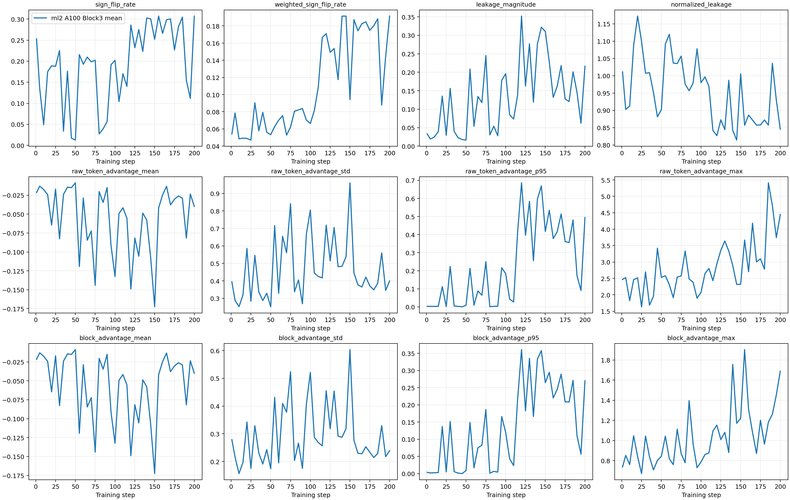
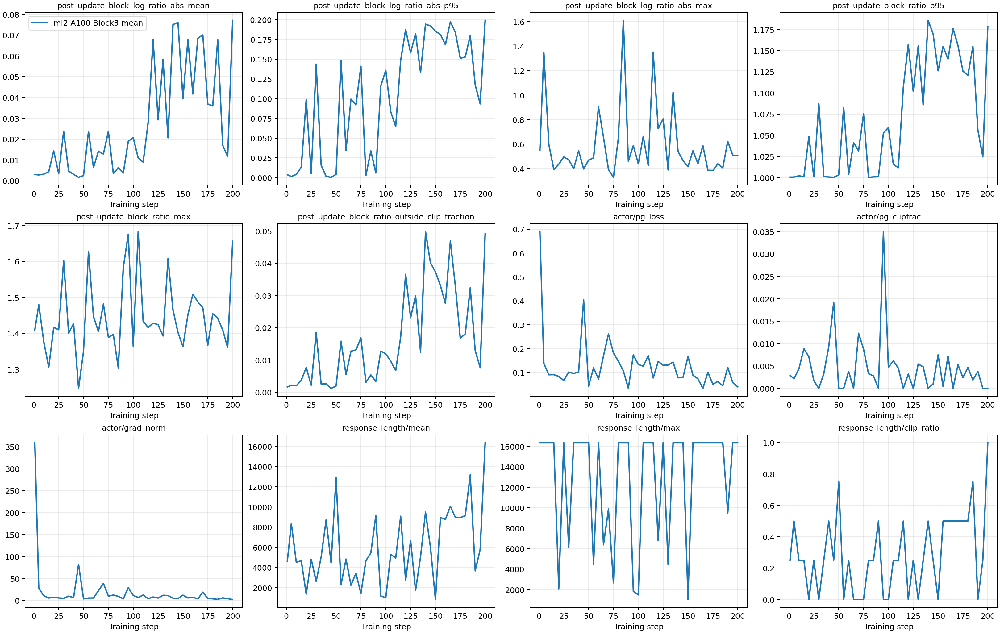
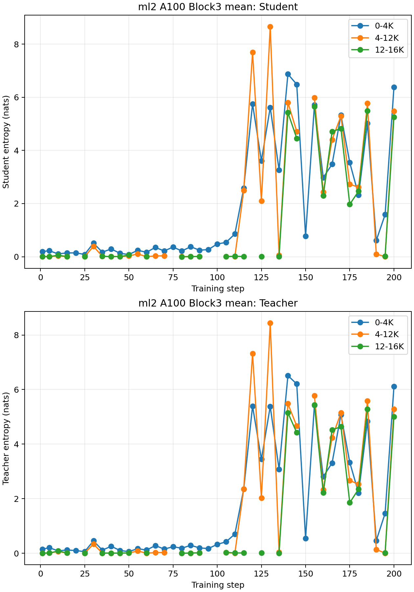
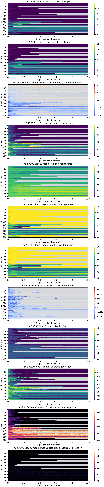

Block3 mean ml2 复现实验
DAPO-Math-17K、Qwen3-1.7B-Base 学生、Qwen3-4B-Base-GRPO 教师；200-step Block3 mean，完整诊断与 Step 50/100/200 n=8 评估。
ml2 没有同机 token baseline；Step 200 虽优于本次 Step 50/100，但历史 grader 重评分的 macro Avg@8/Pass@8 为 0.2404/0.4739，低于 train 旧 Block3 的 0.3188/0.5148。两次 eval 的 rollout seed 实现不同，因此也不能把差值完全归因于硬件或训练。
实验契约
| 模型 | Student: Qwen3-1.7B-Base；Teacher: Qwen3-4B-Base-GRPO。 |
|---|---|
| 训练数据 | DAPO-Math-17K raw 1,791,700-row pool；SHA-256 cf359f257a320aecb6448e824b7cc34f70e694583be3df7177b14f359b7959cf。seed=21 的确定性索引排列，每步 4 prompt、每 prompt 8 rollout。 |
| 目标 | Block size 3；连续 token advantage 取 mean；block current/old log-prob 求和并做 block-level PPO ratio/clipping。 |
| 优化 | 200 steps；LR 2e-06；actor micro-batch/GPU=1；reference log-prob micro-batch/GPU=1；vLLM utilization=0.6；最大响应 16,384。 |
| 固定评估 | Math500/AIME24/AIME25/AMC23；n=8；seed 21-28；temperature=1.0；top-p=0.9；thinking=false；每 checkpoint 5,144 rollout。 |
评估结果
内置 VERL grader 是本次预注册主结果；historical grader 使用 train 旧实验实际采用的 grade_answer_verl（SHA 04f7a0328be18409b55836f7a794dd31fbc982d5870bc542a8fe7c91f9490d7f）离线重评分。生成器逐 checkpoint 校验 hash manifest 中 grader SHA/路径、四个 primary output 路径、n=8、seed 和 raw-output 元数据；仓库未复制大体积 raw rollout，因此本地报告生成器没有重新计算 raw 文件 SHA。
| Checkpoint | 内置 Avg@8 | 内置 Pass@8 | 历史 grader Avg@8 | 历史 grader Pass@8 |
|---|---|---|---|---|
| Step 50 | 0.1485 | 0.2942 | 0.2085 | 0.4242 |
| Step 100 | 0.1228 | 0.2843 | 0.1856 | 0.4424 |
| Step 200 | 0.1675 | 0.3138 | 0.2404 | 0.4739 |
Step 200 任务明细
| Task | Avg@8 | Pass@8 | 平均 token | 格式错误 |
|---|---|---|---|---|
| MATH500 | 0.5475 | 0.8480 | 1792 | 749 |
| AIME24 | 0.0875 | 0.2667 | 4986 | 61 |
| AIME25 | 0.0542 | 0.1667 | 5566 | 71 |
| AMC23 | 0.2726 | 0.6145 | 3826 | 142 |
与 train 旧结果的边界
| Run | Macro Avg@8 | Macro Pass@8 |
|---|---|---|
| train token OPD, legacy eval | 0.3147 | 0.4865 |
| train Block3, legacy eval | 0.3188 | 0.5148 |
| ml2 Block3, fixed seeds + historical grader | 0.2404 | 0.4739 |
- train 旧实验中 Block3 相对 token 的单 seed 增量为 Avg@8 +0.0041、Pass@8 +0.0283，属于弱阳性证据。
- 本次 ml2 只跑 Block3，没有同机 token baseline，所以不能复现该因果差值。
- train 旧 evaluator 未显式固定 rollout seed；ml2 固定 seed 21-28。historical grader 对齐只消除了评分器差异，没有消除采样差异。
- 硬件由
4x NVIDIA A800-SXM4-80GB变为4x NVIDIA A100-SXM4-80GB；reference micro-batch 从 4 变为 1，vLLM utilization 从 0.7 变为 0.6。
训练诊断与风险
41 个快照全部通过有限性审计。student entropy 最大 6.227（Step 120），最小共享 student Top-16 mass 0.298（Step 120），最大 weighted sign-flip 0.191，最大 block ratio 越界率 4.99%。
Checkpoint evaluation curves

Step 200 task comparison

Length and format behavior

Alignment diagnostics

Credit-assignment diagnostics

Optimization and policy drift

Entropy by response segment

Step x output-position heatmaps (12 metrics)

后续验证
- 在 ml2 用同一代码、同一资源设置补跑 token OPD baseline。
- token 与 Block3 做至少 3 个 paired training seeds；每个 checkpoint 使用相同固定 eval seeds。
- 同时报告 historical grader 与预注册主 grader，或在实验前锁定一个覆盖 AMC23 的统一 grader。
- 以 prompt-batch hash 配对比较 entropy、overlap mass、sign-flip 和 leakage，区分数据难度与训练漂移。
可追溯性
Source commit: 9b3b8b76bcdf02d0a4cfe4720cecb24bc7203977。训练退出码 0；三个 checkpoint、41 个 NPZ 和三个 5,144-rollout eval 已通过自动审计（0 issues，0 warnings）。仓库仅保存 curated JSON、图表和 HTML；raw rollout、日志与 checkpoint 保留在实验存储。